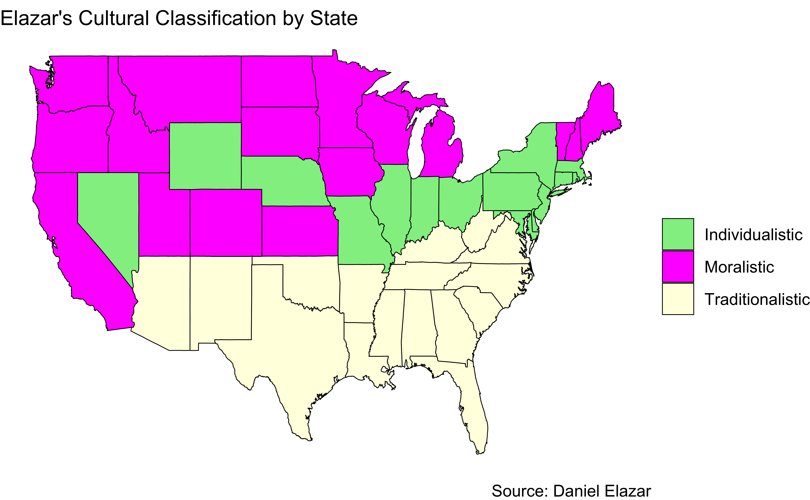
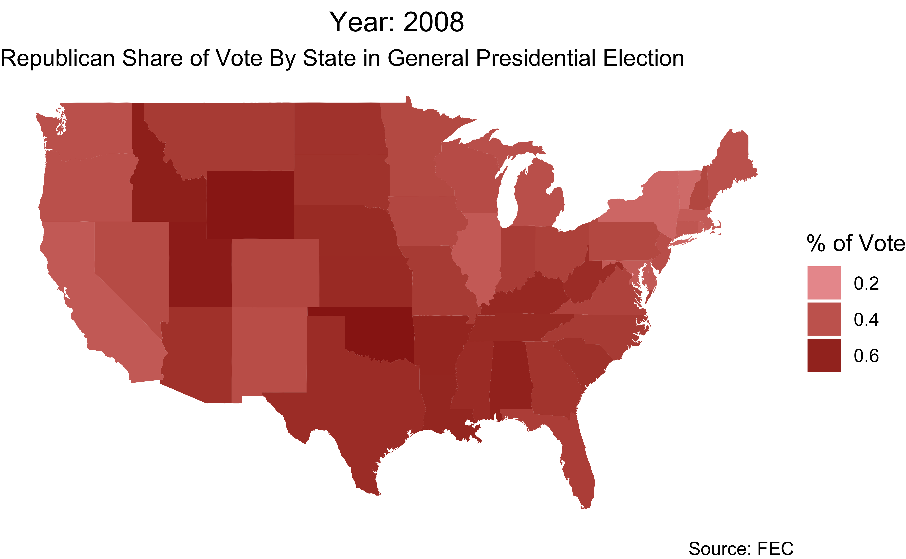

Area Abortions_per_1000_women Abortions_per_1000_live_births
1 alabama 6.0 99
2 alaska 8.4 127
3 arizona 9.3 172
4 arkansas 5.4 89
5 california NA NA
6 colorado 8.3 160
7 connecticut 13.6 272
8 delaware 12.5 219
9 district of columbia 23.0 498
10 florida 19.1 357
Year Out_of_state_abortions(number and percentage)
1 2020 875 (15.3)
2 2020 8 (0.7)
3 2020 72 (0.5)
4 2020 390 (12.4)
5 2020 <NA>
6 2020 1,283 (13.0)
7 2020 456 (5.0)
8 2020 272 (11.9)
9 2020 3,123 (70.7)
10 2020 3,988 (5.3)Why Move? Finding State Attractiveness
Project 2
Question
How is interstate migration affected by state abortion policy, economic status, political culture, and presidential vote?
Goals:
Examine the numbers of people moving between states and compare them to potential explaining factors such as:
Access to abortion
Median household income
Elazar’s cultural classification
Partisanship
Create a spacial-temporal visualization of each of these factors from 2012-2020 as well as a linear model examining state migration as a function of them
Datasets
State Median Household Income Year
1 the united states 76660 2020
2 alabama 61650 2020
3 alaska 84260 2020
4 arizona 75620 2020
5 arkansas 57240 2020
6 california 87530 2020
7 colorado 94440 2020
8 connecticut 89540 2020
9 delaware 78930 2020
10 district of columbia 99440 2020 state political_culture
1 alabama Traditionalistic
2 alaska Individualistic
3 arizona Traditionalistic
4 arkansas Traditionalistic
5 california Moralistic
6 colorado Moralistic
7 connecticut Individualistic
8 delaware Individualistic
9 district of columbia Individualistic
10 florida Traditionalistic STATE R Share of General YEAR
1 alabama 0.6055 2012
2 alaska 0.5480 2012
3 arizona 0.5365 2012
4 arkansas 0.6057 2012
5 california 0.3712 2012
6 colorado 0.4613 2012
7 connecticut 0.4073 2012
8 delaware 0.3998 2012
9 district of columbia 0.0728 2012
10 florida 0.4913 2012 Current residence in Population 1 year and over: Estimate
1 colorado 5757628
2 connecticut 3571470
3 delaware 994669
4 district of columbia 661026
5 florida 21590684
6 georgia 10688429
7 hawaii 1426298
8 idaho 1879719
9 illinois 12544435
10 indiana 6729771
Population 1 year and over: MOE Same house 1 year ago: Estimate
1 +/- 4,091 4794481
2 +/- 3,191 3168509
3 +/- 1,764 889174
4 +/- 1,835 527167
5 +/- 8,058 18571567
6 +/- 6,334 9243299
7 +/- 2,455 1230761
8 +/- 2,400 1601568
9 +/- 5,532 11095785
10 +/- 4,323 5835956
Same house 1 year ago: MOE Same state of residence 1 year ago: Estimate
1 +/- 26,077 686892
2 +/- 15,301 279328
3 +/- 6,362 58180
4 +/- 8,611 68606
5 +/- 47,265 2206566
6 +/- 38,980 1107180
7 +/- 11,560 110790
8 +/- 15,804 176458
9 +/- 30,825 1200753
10 +/- 27,793 714384
Same state of residence 1 year ago: MOE
1 +/- 20,293
2 +/- 13,726
3 +/- 5,692
4 +/- 7,109
5 +/- 41,666
6 +/- 34,938
7 +/- 9,317
8 +/- 11,576
9 +/- 28,559
10 +/- 23,581
Different state of residence 1 year ago: Estimate
1 250031
2 106618
3 42551
4 57746
5 674740
6 302512
7 71626
8 96388
9 195177
10 156417
Different state of residence 1 year ago: MOE Year
1 +/- 17,084 2020
2 +/- 8,523 2020
3 +/- 4,342 2020
4 +/- 5,874 2020
5 +/- 25,002 2020
6 +/- 17,711 2020
7 +/- 8,474 2020
8 +/- 9,806 2020
9 +/- 9,929 2020
10 +/- 11,930 2020Visualizations & Time Series


Warning: Using `size` aesthetic for lines was deprecated in ggplot2 3.4.0.
ℹ Please use `linewidth` instead.

Linear Model
Warning: In lm.fit(x, y, offset = offset, singular.ok = singular.ok, ...) :
extra argument 'na.rm' will be disregarded# A tibble: 8 × 7
term estimate std_error statistic p_value lower_ci upper_ci
<chr> <dbl> <dbl> <dbl> <dbl> <dbl> <dbl>
1 intercept -4.47e+5 1.97e+5 -2.26 0.026 -8.39e+5 -5.41e+4
2 political_culture: Mor… -2.03e+4 2.73e+4 -0.742 0.46 -7.46e+4 3.41e+4
3 political_culture: Tra… 1.24e+5 3.08e+4 4.01 0 6.24e+4 1.85e+5
4 `Median Household Inco… 7.90e+0 2.21e+0 3.58 0.001 3.51e+0 1.23e+1
5 Abortions_per_1000_wom… 2.72e+4 1.65e+4 1.65 0.103 -5.64e+3 6.01e+4
6 `R Share of General` -2.01e+5 2.38e+5 -0.843 0.402 -6.75e+5 2.73e+5
7 `Median Household Inco… -5 e-1 2.02e-1 -2.48 0.015 -9.02e-1 -9.8 e-2
8 Abortions_per_1000_wom… 3.99e+4 2.26e+4 1.77 0.081 -5.00e+3 8.48e+4Current Thoughts & Future Plans
Spacial-temporal visualizations for:
abortion ratios
median household income
partisanship
Spacial visualization for cultural classification
Linear model for interstate migration using the above explanatory variables with interaction between median household income and abortions
Shiny App
- Dashboard with editing to select different variables
Linear Model
refining
visualizing important findings
Overlaying visualizations with migration data
Predictive Modeling